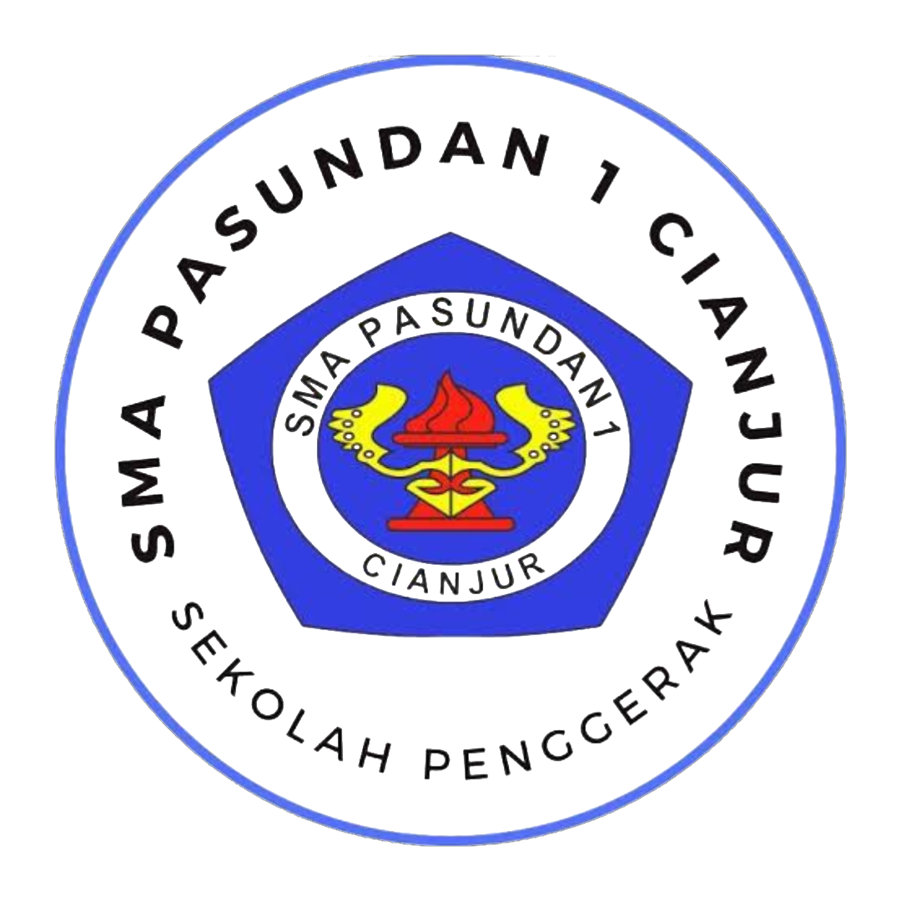

ASTROPHIA SMA Pasundan 1 Cianjur
Jl. Pasundan No. 31, Sabandar, Kecamatan Karang Tengah, Kabupaten Cianjur, Jawa Barat
1 Agustus 1963
A (Unggul)
Yayasan YPDM Pasundan Bandung
SMA Pasundan 1 Cianjur bertekad membentuk peserta didik yang beriman, berilmu, berakhlak mulia, mencintai budaya dan tanah air, serta mampu bersaing dan berkontribusi bagi bangsa.
OSIS ASTROPHIA adalah organisasi siswa intra sekolah yang menjadi wadah bagi seluruh peserta didik SMA Pasundan 1 Cianjur untuk menyalurkan aspirasi, mengembangkan bakat, dan membangun karakter kepemimpinan.
Nama ASTROPHIA diambil dari gabungan kata yang melambangkan semangat kebangkitan seperti Burung Phoenix — makhluk mitologi yang bangkit dari abu dan terus bersinar. Kami percaya bahwa setiap siswa memiliki api semangat yang tak pernah padam, siap untuk tumbuh, berkarya, dan menginspirasi.
Dengan semboyan OSIS•PASSONE, kami berkomitmen untuk menjaga kebersamaan, kekeluargaan, dan semangat gotong royong demi kemajuan bersama. Periode MMXXV / 2025 menjadi tonggak baru bagi kami untuk terus melangkah maju.
Menjadikan OSIS ASTROPHIA sebagai wadah kreativitas, inspirasi, dan pengembangan potensi siswa yang bersatu, berprestasi, berakhlak mulia, serta menjadi teladan yang membanggakan SMA Pasundan 1 Cianjur.
Tidak boleh mengubah nama sebelum Tahun Ajaran berganti!!
Pertemuan berkala seluruh pengurus untuk evaluasi dan perencanaan program kerja.
Wadah bagi siswa untuk menampilkan bakat seni, musik, dan karya kreatif lainnya.
Kompetisi olahraga antar kelas untuk memupuk sportivitas dan kebersamaan.
Kegiatan peduli lingkungan dan masyarakat sebagai bentuk tanggung jawab sosial.
Penguatan spiritual dan pembentukan karakter religius bagi seluruh warga sekolah.
Penyelenggaraan kompetisi ilmiah dan seminar untuk meningkatkan prestasi akademik.
Jl. Pasundan No. 31, Sabandar, Kecamatan Karang Tengah, Kabupaten Cianjur, Jawa Barat